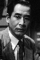

Country:United States, 144 minutes
Spoken languages:
Genres:Drama, History, War
Director(s):Richard Fleischer, Kinji Fukasaku, Toshio Masuda
Writer(s):Akira Kurosawa, Hideo Oguni, Ryûzô Kikushima, Ladislas Farago, Larry Forrester
Video Codec:Unknown
Number: 1012


Certification:G
Storyline:
In the summer of 1941, the United States and Japan seem on the brink of war after constant embargos and failed diplomacy come to no end. "Tora! Tora! Tora!", named after the code words use by the lead Japanese pilot to indicate they had surprised the Americans, covers the days leading up to the attack on Pearl Harbor, which plunged America into the Second World War.
Cast: 


Medium: Original DVD,
Loaned: No
Aspect ratio: Unknown